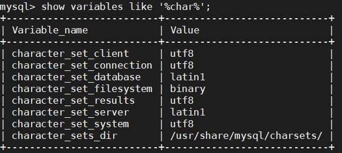

Docker---2-Docker的基本使用
这一章主要讲解Docker的使用
主要分为以下几个部分：
在Docker中运行应用
使用命令
docker run写一个
hello world,使用命令sudo docker run ubuntu:14.04 /bin/echo 'Hello world'
显示我的docker本地中没有ubuntu:14.04镜像，然后从docker仓库中去pull拉取镜像

然后hello world就写出来了
分析
sudo docker run ubuntu:14.04 /bin/echo 'Hello world命令的执行过程，其实这个命令是三部分组成的，分别是docker run、ubuntu:14.04、/bin/echo 'Hello world大致分为以下步骤寻找docker中的镜像ubuntu:14.04，如果没有则执行步骤2，如果有则执行步骤3
拉取镜像
执行
/bin/echo 'Hello world，这个命令就是在终端中输出/bin/echo 'Hello world
使用容器
使用容器有如下几个命令
docker version显示客户端和进程信息
docker ps列出在运行容器
docker logs显示容器的标准输出
docker logs 后面要跟一个参数CONTAINER ID
docker stop停止正在运行的容器
和 docker logs一样 后面要跟一个参数CONTAINER ID
docker rm删除容器，后面也要加一个容器的参数
使用docker镜像
docker images列出所有镜像docker pull centos拉取Centos镜像查找镜像
到 docker hub 的官方网站去搜索

使用
docker search
实际运用
docker 安装mysql
拉取镜像:
docker pull mysql:5.7docker 启动mysql
1
2
3
4
5
6docker run -p 3306:3306 --name mysql \
-v /mydata/mysql/log:/var/log/mysql \
-v /mydata/mysql/data:/var/lib/mysql \
-v /mydata/mysql/conf:/etc/mysql \
-e MYSQL_ROOT_PASSWORD=root \
-d mysql:5.7
参数说明
<!--hexoPostRenderEscape:<figure class="highlight bash"><table><tr><td class="gutter"><pre><span class="line">1</span><br><span class="line">2</span><br><span class="line">3</span><br><span class="line">4</span><br><span class="line">5</span><br></pre></td><td class="code"><pre><span class="line">-p 3306:3306：将容器的3306端口映射到主机的3306端口</span><br><span class="line">-v /mydata/mysql/conf:/etc/mysql：将配置文件夹挂在到主机</span><br><span class="line">-v /mydata/mysql/<span class="built_in">log</span>:/var/<span class="built_in">log</span>/mysql：将日志文件夹挂载到主机</span><br><span class="line">-v /mydata/mysql/data:/var/lib/mysql/：将数据文件夹挂载到主机</span><br><span class="line">-e MYSQL_ROOT_PASSWORD=root：初始化root用户的密码</span><br></pre></td></tr></table></figure>:hexoPostRenderEscape-->进入mysql的容器
1
docker exec -it mysql /bin/bash
连接mysql客户端
1
mysql -uroot -proot --default-character-set=utf8
创建数据库
1
create database test character set utf8;
创建一个reader帐号并修改权限，使得任何ip都能访问
1
grant all privileges on *.* to 'reader' @'%' identified by '123456';

然后本地用数据库连接工具连接mysql数据库

ip地址为服务器的ip，端口就是映射的那个3306
docker下mysql字符配置
登录mysql客户端后，查看MySQL数据库服务器和数据库MySQL字符集
show variables like '%char%';
查看MySQL数据表（table）的MySQL字符集
show table status from sqlstudy_db like '%countries%';查看MySQL数据列（column）的MySQL字符集
show full columns from countries;修改字符为utf-8
- 在4.2种我们启动mysql镜像时将配置文件挂载到宿主机的
/mydata/mysql/conf目录下面
- 在4.2种我们启动mysql镜像时将配置文件挂载到宿主机的
eeee